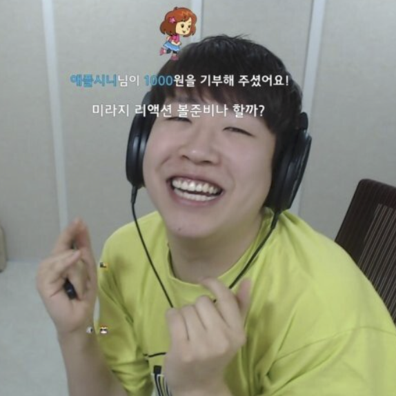
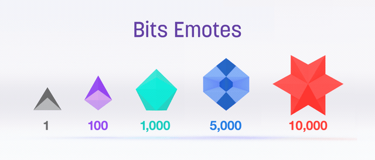

Hi
I'm Twitch TV
2011/
2020/
Let's Go
GLITCH!
Hi
My name is GLITCH!
I'm Twitch TV Mascort!
STREAMER!
서새봄
방송 경력 :
2010. 08. 23 ~ 현재
만 32살
Twitch 안방마님 서새봄
신 (Lee Tae Jun)
도 (Mirage)
림 (Dohyeon)
O-King

트위치에서 방송하는 사람들은 스트리머라고 부릅니다. 영상, 음악 등을 실시간으로 제공하는 서비스를 스트리밍이라고 하며, 스트리머는 여기서 파생된 호칭입니다. 해외에서는 인터넷 방송 진행자를 스트리머라고 부르는 경우가 많습니다. 트위치가 한국으로 수입할때 용어도 같이 수입되었습니다.
Donation!
서새봄 - 도내를 주세요
- 일반, 제휴, 파트너 스트리머
- 제휴 이상의 스트리머는 ‘구독’가능
- 광고수익(파트너 이상)
- 응원수익:비트(제휴 이상)
- 후원수익(일반)
2020©한경대학교 디자인학과 커뮤니케이션전공 김우용
Hi
I'm
Afreeca TV
2006/
2020/
Let's
Get it
ATI!
Hello
I'm
ATI!
I'm
Afreeca TV Logo!
BJ!


와꾸대장
Bong-Jun
DDDD-!
릴카
아프리카 tv에서 방송하는 사람들은 BJ라고 불리며 Broadcasting Jockey의 약자입니다. TV방송의 VJ에서 따온 용어이기도 하며 아프리카 TV의 방송 진행자를 뜻합니다. 초기 BJ는 방장의 약어였으며 아프리카 tv의 브랜드를 리뉴얼 하는 과정에서 의미가 생겼습니다.
쯔양
안녕하세요 오늘 제가 준비한 먹방은요~!
BUCK
파앙-이!
STAR! BALLON
Give me
Star Balloon!
별풍선후원 -
정기구독 -
애드벌룬 -
배너광고 -
2020©한경대학교 디자인학과 커뮤니케이션전공 김우용